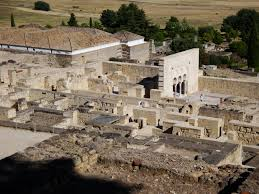

Medina Azahara
Medina Azahara, castellanización del nombre en árabe, مدينة الزهراء Madīnat al-Zahrā' ("la ciudad brillante"),2 fue una ciudad palatina o áulica que mandó edificar Abderramán III (Abd al-Rahman III, al-Nasir) a unos 8 km en las afueras de Córdoba en dirección oeste, más concretamente, en Sierra Morena.
Los principales motivos de su construcción son de índole político-ideológica: la dignidad de califa exige la fundación de una nueva ciudad, símbolo de su poder, a imitación de otros califatos orientales y sobre todo, para mostrar su superioridad sobre sus grandes enemigos, los fatimíes de Ifriqiya, la zona norte del continente africano. Además de oponentes políticos, lo eran también en lo religioso, ya que los fatimíes, chiíes, eran enemigos de los omeyas, mayoritariamente de la rama islámica suní.
La cultura popular también dice que fue edificada como homenaje a la mujer favorita del califa: Azahara.3
El yacimiento arqueológico de Medina Azahara está declarado Bien de interés cultural en la categoría de monumento desde el año 1923.4 El 27 de enero de 2015 «Madínat al-Zahra» fue inscrito en la Lista Indicativa de España del Patrimonio de la Humanidad, en la categoría de bien cultural (nº. ref 5978).5
El 12 de enero de 2017 se registró el documento definitivo de la candidatura de la ciudad para formar parte de la Lista de Patrimonio de la Humanidad,6 siendo declarada oficialmente como Patrimonio de la Humanidad el 1 de julio de 2018.7 En 2016 recibió 181.653 visitantes, siendo el cuarto espacio cultural más visitado de la ciudad de Córdoba.8